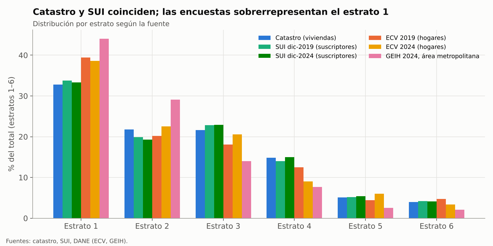
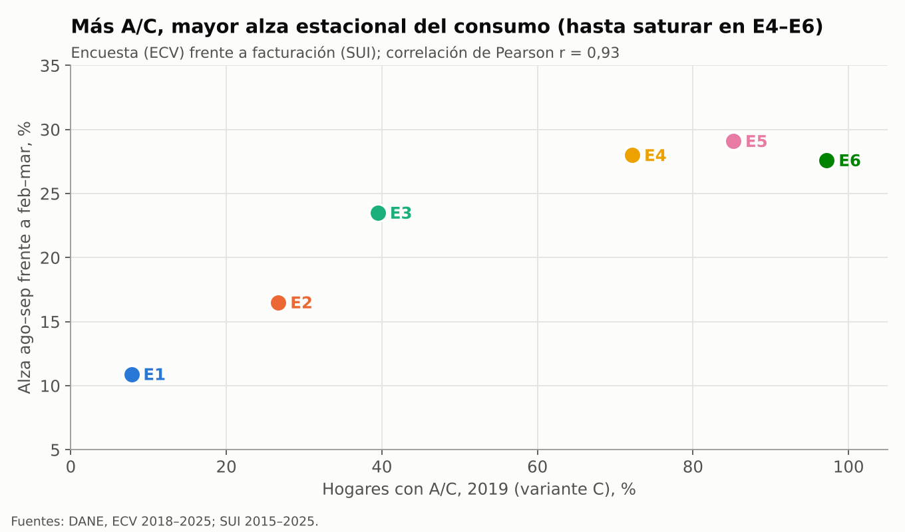
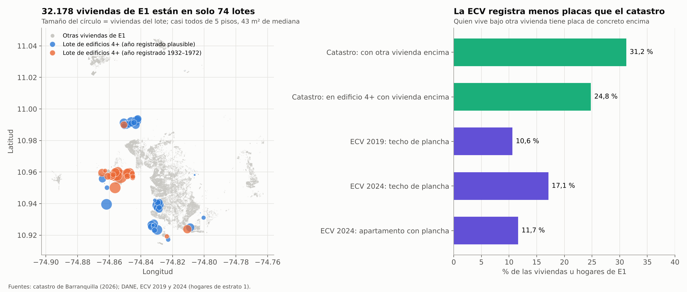

Coherencia entre fuentes y validación#
Antes de usar las fuentes en el modelo se comprobó que coinciden en las magnitudes que miden en común. Las comparaciones no son una validación del modelo, que se hará en la Fase 3 con la demanda horaria de XM y el consumo de 2021–2025. Lo que muestran es si cada fuente mide la misma población y en qué casos hay que corregirla. Cuando dos fuentes difieren, se indica cuál se adopta y por qué.
Distribución de los hogares por estrato#


Figura 21 Distribución de viviendas, suscriptores u hogares por estrato según la fuente. El catastro y el SUI coinciden; las encuestas tienen más hogares de estrato 1 que la ciudad.#
Para resumir la diferencia entre dos distribuciones se usa el índice de disimilitud (Duncan y Duncan, 1955):
donde \(\pi_{A,e}\) es la proporción del estrato \(e\) en la fuente \(A\). \(D\) es el porcentaje de hogares que habría que mover de estrato para que las dos distribuciones fueran iguales.
Fuente |
Unidad |
E1 |
E2 |
E3 |
E4 |
E5 |
E6 |
\(D\) frente al SUI |
|---|---|---|---|---|---|---|---|---|
Catastro 2026 |
Viviendas |
32,8 |
21,8 |
21,6 |
14,8 |
5,1 |
4,0 |
2,4 (2024) |
SUI, diciembre de 2019 |
Suscriptores |
33,8 |
19,9 |
22,8 |
14,0 |
5,2 |
4,2 |
— |
SUI, diciembre de 2024 |
Suscriptores |
33,3 |
19,3 |
22,9 |
15,0 |
5,4 |
4,1 |
— |
ECV 2019 |
Hogares |
39,4 |
20,2 |
18,1 |
12,5 |
4,4 |
4,7 |
6,7 |
ECV 2024 |
Hogares |
38,6 |
22,5 |
20,6 |
9,0 |
6,0 |
3,4 |
9,1 |
GEIH 2024 (área metropolitana) |
Hogares |
44,0 |
29,1 |
14,0 |
7,7 |
2,5 |
2,1 |
20,8 |
El catastro y el SUI, que son fuentes independientes (un registro predial y un registro de facturación), coinciden: \(D = 2{,}4\) %. La mayor diferencia está en el estrato 2, con 2,5 puntos. La ECV, expandida con sus propios factores, sobrerrepresenta el estrato 1 entre 5 y 6 puntos (\(D\) de 6,7 % y 9,1 %). Como el estrato 1 es el de menor tenencia de A/C, la ECV sin corregir subestima la tenencia de la ciudad: 30,9 % frente a 33,3 % en 2019 y 37,1 % frente a 41,4 % en 2024. Por eso la tasa de la ciudad se calcula con las tasas de la ECV por estrato y los pesos del SUI (Holt y Smith, 1979). La GEIH cubre el área metropolitana, que incluye municipios con más hogares de estratos bajos. Por eso se usa solo para el trabajo en casa por estrato y no para la composición de la ciudad.
Número de hogares#
Fuente |
Cifra |
Unidad |
|---|---|---|
Catastro 2026 |
332.718 |
Viviendas residenciales con estrato |
SUI, diciembre de 2024 |
330.101 |
Suscriptores residenciales, estratos 1–6 |
Población 2025 ÷ personas por hogar (ECV 2024) |
≈ 364.000 |
Hogares (1.279.344 ÷ 3,51) |
ECV 2024, suma de factores de expansión |
389.372 |
Hogares |
El catastro y el SUI difieren en 0,8 %. La estimación demográfica es 10 % mayor. La diferencia es coherente con varios hogares por vivienda y con la vivienda informal sin medidor propio. La expansión de la ECV es 18 % mayor que el SUI. El modelo expande sus resultados a la ciudad con los suscriptores del SUI, porque es la población a la que corresponde el consumo facturado contra el que se calibra.
Tenencia de equipos medida por fuentes distintas#
Fuente |
Dominio |
Tenencia de nevera |
|---|---|---|
ECV 2019 |
Barranquilla |
90,5 |
ENUT 2024–2025 |
Atlántico, cabeceras |
90,3 |
ECV 2024, factores de expansión |
Barranquilla |
91,4 |
ECV 2024, postestratificada con el SUI |
Barranquilla |
93,0 |
Tres fuentes con muestras y cuestionarios distintos dan una tenencia de nevera de entre 90 % y 93 %. La ENUT no pregunta por A/C ni ventilador, por lo que no permite contrastar esos equipos.
La imputación de la tenencia de A/C a las viviendas del catastro sirve además como control interno. Con la variante C, la proporción media en el catastro en 2024 es de 40,7 %, frente a 41,2 % con los pesos del SUI. La diferencia es de composición: el catastro tiene más viviendas de estrato 2 y menos de estrato 3 que el SUI.
Encuesta frente a facturación#
La ECV y el SUI no comparten preguntas, pero deberían ser coherentes en un aspecto: los estratos con más A/C deberían tener un alza mayor del consumo en los meses más calurosos.


Figura 22 Tenencia de A/C de 2019 (ECV, variante C) frente al alza del consumo facturado de agosto y septiembre respecto a febrero y marzo (SUI, 2015–2025), por estrato.#
La correlación entre las dos magnitudes es alta: \(r = 0{,}93\) de Pearson (\(p = 0{,}007\), seis estratos), y la relación es creciente hasta el estrato 4. En los estratos 4 a 6 el alza se estabiliza entre 28 % y 29 % aunque la tenencia sigue subiendo, de 72 % a 97 %. Esto es coherente con un uso por hogar que no crece en proporción a la tenencia, y con el número de equipos y la fracción climatizada como factores que la tenencia no captura. La comparación tiene dos limitaciones. Es ecológica, con seis puntos agregados, así que no mide el efecto del A/C en un hogar. Y la nevera también consume más con el calor, de modo que una parte del alza no es del A/C. Por eso la propuesta reporta el reparto entre A/C y nevera con su capa de incertidumbre (Fase 3, paso 7).
Edificios del estrato 1 frente al techo declarado en la ECV#
En el catastro, 29,5 % de las viviendas de estrato 1 (32.178) están en edificios de 4 o más pisos. En la ECV, en cambio, solo 17,1 % de los hogares de ese estrato declara techo de plancha de concreto en 2024 (10,6 % en 2019). Como en un edificio todas las viviendas, salvo las del último piso, tienen otra vivienda encima, las dos cifras no son compatibles a primera vista. Se revisó si la diferencia viene de un error del catastro o de la muestra de la encuesta.


Figura 23 Izquierda: lotes del catastro con viviendas de estrato 1 en edificios de 4 o más pisos, sobre el resto de viviendas del estrato. Derecha: viviendas de estrato 1 con otra vivienda encima según el catastro y hogares con techo de plancha según la ECV.#
El catastro es coherente. La altura de los edificios no tiene errores apreciables. Solo 20 de las 32.178 unidades están en lotes cuyo piso más alto es menor de 4, y solo 10 viviendas de hasta 3 pisos registran más de 3 plantas. Las unidades se reparten casi por igual entre los pisos 1 a 5 (unas 5.790 por piso), lo que corresponde a bloques de 5 pisos sin ascensor; unas pocas torres llegan a 12. Las 32.178 viviendas están en solo 74 lotes matriz, con una mediana de 43 m² y 2 habitaciones, concentrados en pocas zonas del occidente y el suroccidente de la ciudad (Figura 23). Son rasgos propios de los proyectos de vivienda de interés prioritario. El 29,5 % es, por tanto, un dato real. Sí aparece otro error: 14.610 apartamentos de estrato 1 y 766 de estrato 2 en esos lotes registran años de construcción entre 1932 y 1972. Ningún apartamento de los estratos 3 a 6 en edificios de 4 o más pisos tiene un año anterior a 1975, de modo que esos años deben tratarse como faltantes antes de usar la antigüedad en la Fase 1.
La muestra de la ECV casi no capta esos edificios. La pregunta de la ECV es «¿Cuál es el material predominante del techo o cubierta?», sin instrucción para los apartamentos (DANE, 2026). Un hogar con otra vivienda encima tiene una placa de concreto sobre su techo, de modo que, si responde por su propio techo, la proporción de plancha en el estrato 1 debería ser de al menos 31,2 %. La ECV registra 17,1 %, y solo 11,7 % de los hogares de estrato 1 vive en un apartamento con plancha, frente a 24,8 % de las viviendas en edificios con otra vivienda encima según el catastro. La ECV 2024 tiene 26 segmentos con hogares de estrato 1, y solo 2 tienen el perfil de un bloque de apartamentos, con todos sus hogares en apartamento y bajo plancha. Si los segmentos se seleccionaran en proporción a las viviendas, se esperarían 7,7 (\(p = 0{,}01\) de observar 2 o menos con una binomial). La muestra no permite separar las causas posibles: el azar en una muestra por conglomerados, un marco muestral que incorpora con rezago los edificios construidos después del censo de 2018 (5.683 de estas viviendas tienen año 2019 o posterior), o hogares de estos edificios que declaran otro estrato.
Concepto |
Valor |
|---|---|
Tenencia de A/C, hogares de E1 en apartamento con plancha (30 hogares, 11 segmentos) |
26,2 % |
Tenencia de A/C, demás hogares de E1 |
10,6 % |
Tenencia de A/C de E1, ECV con sus factores de expansión |
12,4 % |
Tenencia de A/C de E1, reponderada a la composición del catastro (24,8 % a 29,5 % en edificios) |
14,5 % a 15,2 % |
Efecto en la tenencia de la ciudad |
+0,7 a +0,9 puntos |
P(A/C) imputada a los edificios de E1 en el catastro (variante C) |
23,9 % |
La reponderación y la imputación al catastro sin igualar el estrato 1 a la ECV (14,4 %, supuesto S7) apuntan en la misma dirección: la tenencia de A/C del estrato 1 en 2024 estaría entre 1 y 3 puntos por encima de la que da la ECV. La P(A/C) que la imputación asigna a los edificios de estrato 1 (23,9 %) coincide con la observada en los hogares de la ECV en apartamento con plancha (26,2 %). La evidencia es limitada: son 30 hogares, y en la ECV 2019 no hay diferencia entre los dos grupos (7,6 % y 7,7 %). Por eso la serie adoptada conserva la tasa de la ECV y la diferencia queda como sensibilidad (Tabla 18).
Para la Fase 1 se desprenden dos consecuencias. La distribución de techos de la ECV en el estrato 1 describe sobre todo casas (12,8 % de plancha en las casas en 2024), por lo que debe aplicarse a las casas y no a todas las viviendas del estrato. En los edificios, el techo solo es superficie exterior en el último piso, que reúne 16 % de sus unidades (4,7 % de las viviendas del estrato), y su material no se conoce (supuesto S6).
Validación pendiente#
Clima. Las series de ERA5-Land se contrastarán con la estación del aeropuerto Ernesto Cortissoz del IDEAM, por hora del día y mes, con el sesgo y la raíz del error cuadrático medio (Fase 2, paso 1).
Demanda horaria. La suma del consumo facturado del SUI y las pérdidas debe acercarse a la demanda regulada de XM del mercado de Air-e (Fase 3, paso 1).
Consumo del estrato 1. El consumo por suscriptor del estrato 1 es mayor que el de los estratos 2 y 3, lo que no es coherente con su menor tenencia de A/C. Queda pendiente confirmarlo con Air-e.